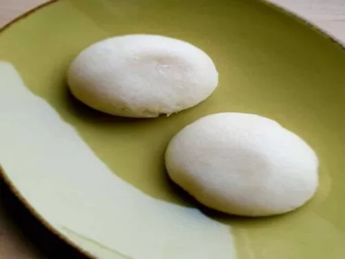

Prepared Banku

Banku
Banku is an energy giving food prepared from proportional corn dough and cassava tuber mixture.
The Banku flour maize have to be fermented to make the Banku.
Ingredients
For Fermented Corn Flour
- 2 cups Corn Flour
- 3 cups Water
For Banku
- 1 cup Fermented Corn Flour
- 2 cups Warm Water or cold Water
Steps
For Fermented Corn Flour
- Mix the corn flour with the warm water properly in a jar or container.
- After mixing the mixture well, cover it with a clean piece of cloth and place the container in warm temperature for about two days. If it is a cold season it can take more days.
For Banku
- Boil at least 2 cups of water in a pot.
- Add the fermented corn dough slowly to the hot water in the pot
- Stir the mixture constantly and thoroughly for about 20 minutes. Make sure that the mixture is thick. If it
becomes too dry, add water to make it stiff.
- Roll it into orange-sized balls and use rubberto wrap it tightly to maintain their freshness and their warmth.